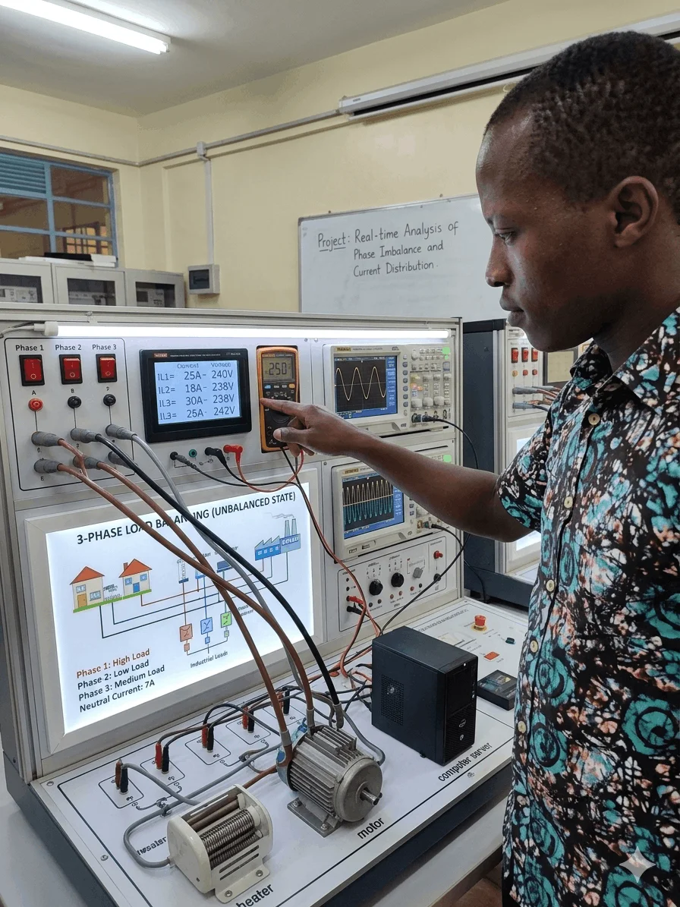

Electrical Engineering
Power systems, electrical installation concepts, measurements, troubleshooting and engineering analysis.
Power SystemsTestingAutomation
ELECTRICAL ENGINEERING × SOFTWARE
I’m Shedrack Waema — an Electrical Engineer and Software Developer focused on power systems, automation, web development and technology that solves real-world problems.
ABOUT ME
I combine electrical engineering knowledge with modern software development to create solutions that are useful, measurable and easy to use.
My interests include power systems, electrical troubleshooting, automation, responsive websites, business systems and engineering calculation tools. I enjoy turning ideas into polished, functional products.
Start a conversation ↗.webp)
EXPERIENCE

Practical exposure to electrical engineering environments, equipment, measurements, troubleshooting and safe working practices.
CAPABILITIES
Power systems, electrical installation concepts, measurements, troubleshooting and engineering analysis.
Responsive web applications and practical business systems with clean, maintainable interfaces.
Business websites, dashboards, engineering tools, Git/GitHub workflows and user-focused digital experiences.
SELECTED WORK
A visual collection of the work and technical areas represented in this portfolio. Every image is stored locally in the project, so it remains visible when the site is deployed to GitHub Pages.

01Visual engineering work focused on current distribution, phase imbalance and measurement-based analysis.
Open engineering tools →02Practical electrical environment covering control panels, protective devices, wiring and technical testing.
03A visual showcase of engineering, renewable energy, control systems and digital technology interests.
A responsive personal platform built with HTML, CSS and JavaScript, designed for GitHub Pages and fast public access.
View repository →INTERACTIVE ENGINEERING TOOLS
Enter any two known values to solve voltage, current, resistance and power.
Estimate design current and a reference conductor size from load, length and phase.
Estimate capacitor-bank kVAR from active power and initial/target power factor.
Engineering calculators are educational estimates and should be verified against applicable standards, manufacturer data and site conditions before real-world design or installation.
06 · CONTACT
For engineering, software development, web projects or digital business solutions, get in touch directly.